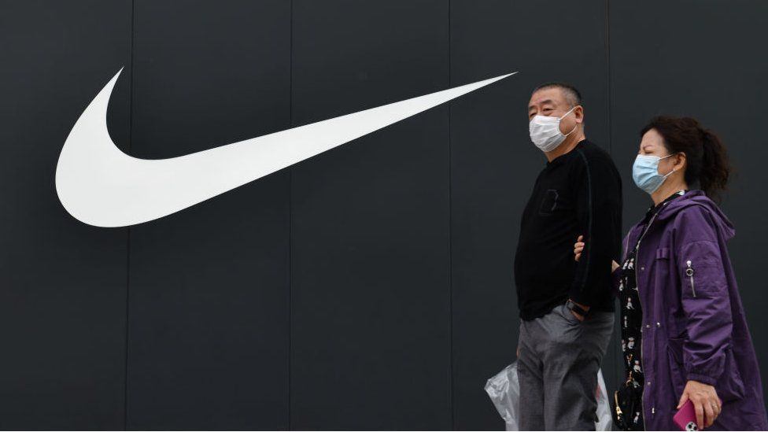

Nike, Inc.
Nike, Inc. is an American multinational corporation that is engaged in the design, development, manufacturing, and worldwide marketing and sales of footwear, apparel, equipment, accessories, and services. The company is headquartered near Beaverton, Oregon, in the Portland metropolitan area.It is the world's largest supplier of athletic shoes and apparel and a major manufacturer of sports equipment, with revenue in excess of US$37.4 billion in its fiscal year 2020 (ending May 31, 2020).
As of 2020, it employed 76,700 people worldwide. In 2020 the brand alone was valued in excess of $32 billion, making it the most valuable brand among sports businesses.Previously, in 2017, the Nike brand was valued at $29.6 billion. Nike ranked 89th in the 2018 Fortune 500 list of the largest United States corporations by total revenue.
Acquisitions
Nike has acquired and sold several apparel and footwear companies over the course of its history. Its first acquisition was the upscale footwear company Cole Haan in 1988,followed by the purchase of Bauer Hockey in 1994. In 2002, Nike bought surf apparel company Hurley International from founder Bob Hurley.
- Sports apparel
- Sports apparel
- Collectibles
- Sweatshops